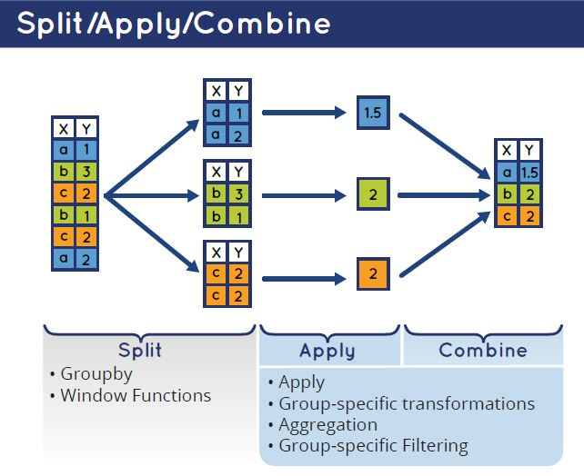

data.table pt2
Разбор домашней работы
работа с колонками
- выделите в отдельный датасет всех погибших пассажиров, оставьте для них только значения пола, возраста и класса билета (
pclass), переменнуюpclassпереименуйте вclass
library(data.table)
titanic <- fread('https://gitlab.com/hse_mar/mar221s/-/raw/master/data/titanic3.csv')
titanic_not_survived <- titanic[survived == 0, list(sex, age, class = pclass)]
str(titanic_not_survived)## Classes 'data.table' and 'data.frame': 809 obs. of 3 variables:
## $ sex : chr "female" "male" "female" "male" ...
## $ age : num 2 30 25 39 71 47 NA 24 36 25 ...
## $ class: int 1 1 1 1 1 1 1 1 1 1 ...
## - attr(*, ".internal.selfref")=<externalptr>- в полученном датасете посчитайте количество пассажиров, их средний и медианный возраст, разброс по возрасту (
sd())
titanic_not_survived[, list(
n_rows = .N,
age_mn = mean(age, na.rm = TRUE),
age_md = median(age, na.rm = TRUE),
age_sd = sd(age, na.rm = TRUE))]## n_rows age_mn age_md age_sd
## 1: 809 30.54536 28 13.92255- *в датасете titanic попробуйте построить логистическую регрессию, которая бы предсказывала вероятность выживания пассажира (
survived).
lm_fit <- glm(survived ~ sex + age + pclass + fare, data = titanic, family = 'binomial')
summary(lm_fit)##
## Call:
## glm(formula = survived ~ sex + age + pclass + fare, family = "binomial",
## data = titanic)
##
## Coefficients:
## Estimate Std. Error z value Pr(>|z|)
## (Intercept) 4.5009747 0.4616310 9.750 < 2e-16 ***
## sexmale -2.4899900 0.1669830 -14.912 < 2e-16 ***
## age -0.0336871 0.0062977 -5.349 8.84e-08 ***
## pclass -1.1079840 0.1284987 -8.623 < 2e-16 ***
## fare 0.0006614 0.0017242 0.384 0.701
## ---
## Signif. codes: 0 '***' 0.001 '**' 0.01 '*' 0.05 '.' 0.1 ' ' 1
##
## (Dispersion parameter for binomial family taken to be 1)
##
## Null deviance: 1413.57 on 1044 degrees of freedom
## Residual deviance: 982.81 on 1040 degrees of freedom
## (264 observations deleted due to missingness)
## AIC: 992.81
##
## Number of Fisher Scoring iterations: 4для тех, кто любит посложнее
Создайте датасет:
- несколько пользователей
- по 5 сессий на каждого пользователя.
- поле логина, тип – дата и время (таймстамп), все логины в интервале 1-9 сентября. В юникс-формате или просто дата и время, на ваше усмотрение.
- для каждой сессии создайте случайную длину сессии (достаточно просто вектор длиной со всю таблицу, без учета пользователей) в секундах. Длина сессии должна варьировать в пределах 120 - 600 секунд
- посчитайте количество пользователей, среднее количество сессий на пользователя, среднюю длину сессий. Без учета вариативности внутри пользователя, overall по всему датасету.
Подсказки:
- датасет лучше создавать в несколько шагов
- есть полезная функция
expand.grid() - для генерации времени поможет функция
as.POSIXct(), плюс есть немного справочных материалов в учебнике: раз, два
my_dt <- expand.grid(
paste0('user_', 1:3),
1:5
)
my_dt <- as.data.table(my_dt)
setnames(my_dt, c('uid', 'sid'))
setkey(my_dt, 'uid')
time_seq <- seq(as.POSIXct("2023-09-01 00:00:00"), as.POSIXct("2023-09-09 23:59:59"), by = "s")
my_dt[, login_ts := sort(sample(time_seq, .N))]
my_dt[, session_length := sample(120:600, .N)]
head(my_dt)## uid sid login_ts session_length
## 1: user_1 1 2023-09-02 03:05:11 568
## 2: user_1 2 2023-09-02 12:45:43 385
## 3: user_1 3 2023-09-03 09:01:06 366
## 4: user_1 4 2023-09-03 10:34:47 134
## 5: user_1 5 2023-09-03 13:37:23 485
## 6: user_2 1 2023-09-04 00:24:21 305Применение функций
dataset
library(data.table)
# импортируем по ссылке
sw <- fread('http://bit.ly/39aOUne')
# смотрим структуру объекта
str(sw)## Classes 'data.table' and 'data.frame': 77 obs. of 6 variables:
## $ name : chr "Luke Skywalker" "C-3PO" "Darth Vader" "Owen Lars" ...
## $ height : int 172 167 202 178 165 97 183 188 163 183 ...
## $ mass : num 77 75 136 120 75 32 84 84 NA NA ...
## $ skin_color : chr "fair" "gold" "white" "light" ...
## $ gender : chr "male" "n/a" "male" "male" ...
## $ planet_name: chr "Tatooine" "Tatooine" "Tatooine" "Tatooine" ...
## - attr(*, ".internal.selfref")=<externalptr>Применение функций
Количество строк и значений: .N, uniqueN
В data.table есть пара полезных функций, которые позволяет быстро и лаконично считать количество значений и количество уникальных значений.
Считаем количество строк в табличке - для этого используется функция .N (в data.table есть еще несколько функций, которые начинаются с ., но мы их почти не будем касаться).
sw[, .N]## [1] 77Функция uniqueN() считает количество уникальных значений. Аналогична сочетанию двух функций length() + unique(), просто короче и быстрее.
sw[, uniqueN(planet_name)]## [1] 48Ветвления: ifelse / fifelse
В R есть два вида ветвлений с использованием if. Первое - стандартная для многих языков конструкция if {} else{}, она используется при создании функций и т.д. Для работы с таблицами полезнее функция ifelse() или ее быстрый аналог в data.table - fifelse (f от fast).
В первом аргументе функции мы указываем проверку, в результате которой можно будет сказать TRUE или FALSE. Вторым аргументом - что должно быть возвращено, если результат проверки будет TRUE (логическое утверждение из первого аргумента истинно). Третий аргумент - что должно быть возвращено, если утверждение из первого аргумента ложно. Например, мы проверяем, истинно ли, что 5 тождественно 3. Так как 5 не равно трем, результатом сравнения 5 == 3 будет FALSE (утверждение ложно), соответственно, результатом ifelse() будет 'значение если неверно'.
5 == 3## [1] FALSEifelse(5 == 3, 'значение если верно', 'значение если неверно')## [1] "значение если неверно"Ключевое отличие ifelse() от классического if {} else{} в том, что эта функция векторизована. То есть, если в первом аргументе сравнивать вектор с каким-то значением, то проверка будет применяться к каждому элементу вектора. Соответственно, и результатов ifelse будет столько же, сколько элементов в векторе.
my_vec <- c(5, 3, 9)
ifelse(my_vec == 3, 'значение если верно', 'значение если неверно')## [1] "значение если неверно" "значение если верно" "значение если неверно"Все это позволяет использовать ifelse/fifelse для операций над колонками - например, в примере мы проверяем с помощью функции grepl, встречается ли в значениях ячеек в колонке skin_color слово grey. И если встречается - то в новую колонку будет проставлено значение grey, а если не всречается - no grey.
sw[, new := fifelse(grepl('grey', skin_color), 'grey', 'no grey')]
sw[1:10, list(name, skin_color, new)]## name skin_color new
## 1: Luke Skywalker fair no grey
## 2: C-3PO gold no grey
## 3: Darth Vader white no grey
## 4: Owen Lars light no grey
## 5: Beru Whitesun lars light no grey
## 6: R5-D4 white, red no grey
## 7: Biggs Darklighter light no grey
## 8: Anakin Skywalker fair no grey
## 9: Shmi Skywalker fair no grey
## 10: Cliegg Lars fair no greyАгрегации
В синтаксисе data.table есть конструкция by, которая отвечает за примененим операций над колонками отдельно для каждой группы (общая структура выглядит следующим образом: dataset[выбор строк, операции над колонками, группировка]).
Общая логика группировки стандартная - split - apply - combine. То есть, датасет разделяется на блоки по значениям группирующей переменной, к колонкам каждого сабсета применяется какое-то выражение, и результат обратно собирается в таблицу. Результатом группировки в data.table всегда будет таблица.

Вычисления по одной колонке
Можно использовать группировку при применении функции к таблице, но удобнее результат операции с колонкой оборачивать в list(), так как это дает возможность переименовать колонку. В примере ниже мы считаем количество уникальных значений в колонке name для каждой группы по значениям колонки gender:
sw[, uniqueN(name), by = gender]## gender V1
## 1: male 57
## 2: n/a 3
## 3: female 16
## 4: hermaphrodite 1sw[, list(n_chars = uniqueN(name)), by = gender]## gender n_chars
## 1: male 57
## 2: n/a 3
## 3: female 16
## 4: hermaphrodite 1Вычисления по нескольким колонкам
Можно выполнять операции сразу с несколькими колонками:
sw[, list(
n_chars = uniqueN(name),
mass_md = median(mass, na.rm = TRUE)
), by = gender]## gender n_chars mass_md
## 1: male 57 80.0
## 2: n/a 3 32.0
## 3: female 16 52.5
## 4: hermaphrodite 1 NAГруппировка по нескольким полям
Часто возникает необходимость группировки сразу по нескольким полям - для этого колонки групп также указываются через список. В выражении ниже мы сначала фильтруем датасет и оставляем только строки, где в колонке gender есть значения male и female, после чего в группах по полу и цвету кожи считаем количество персонажей. Результат агрегации записываем в новый объект и выводим на печать только первые 5 строк (просто чтобы сократить вывод).
sw_grps <- sw[gender %in% c('male', 'female'),
list(n_chars = uniqueN(name)),
by = list(gender, skin_color)]
sw_grps[1:5]## gender skin_color n_chars
## 1: male fair 12
## 2: male white 2
## 3: male light 4
## 4: female light 5
## 5: female fair 3Манипуляции с таблицами
rbind()
Функция rbind()(от row bind) используется для объединение двух или более таблиц по строкам. То есть, в результате получается таблица с таким же количеством колонок, но с увеличенным числом строк - по количеству строк в объединяемых таблицах.
Нередко в объединяемых таблицах отсутствует какая-нибудь колонка или колонки перепутаны. В таких случаях необходимо использовать аргументы use.names = TRUE (проверка названий колонок при объединение) и fill = TRUE (создание колонки с NA-значениями). Обратите внимание, это работает только с data.table-объектами.
# создаем первую таблицу
dt1 <- data.table(tb = 'table_1',
col1 = sample(9, 3),
col3 = 'only in table1',
col2 = sample(letters, 3))
# создаем вторую таблицу
dt2 <- data.table(tb = 'table_2',
col4 = 'only in table2',
col1 = sample(9, 3),
col2 = sample(letters, 3))
# объединяем по строкам
rbind(dt1, dt2, fill = TRUE)## tb col1 col3 col2 col4
## 1: table_1 3 only in table1 d <NA>
## 2: table_1 7 only in table1 r <NA>
## 3: table_1 9 only in table1 k <NA>
## 4: table_2 7 <NA> f only in table2
## 5: table_2 9 <NA> w only in table2
## 6: table_2 3 <NA> o only in table2cbind()
Функция cbind() (от columns bind) используется для объединения нескольких векторов или таблиц равной длины. В результате получается объединённая таблица такой же длины, как каждый из объединяемых векторов. При объединении таблиц — с таким же количеством строк, как в каждой из объединяемых таблиц, и с суммарным количеством колонок.
При использовании cbind() в работе с таблицами необходимо помнить, что это буквально “склейка” таблиц независимо от порядка наблюдений по строкам. В противном случае можно получить наблюдение, где часть колонок описывает характеристики этого наблюдения, а другая часть — каких-то других наблюдений.
Другой нюанс, который также необходимо учитывать: при объединении таблиц названия колонок останутся прежними. Так что если в нескольких таблицах встречается, например, колонка col1, то в финальном датасете будет несколько колонок с таким названием — по количеству объединяемых таблиц, в которых она была. В свою очередь, это усложняет задачи выбора колонки по названию и мешает понять, в какой колонке какое содержание.
# выведем ранее созданные таблицы
print(dt1)## tb col1 col3 col2
## 1: table_1 3 only in table1 d
## 2: table_1 7 only in table1 r
## 3: table_1 9 only in table1 kprint(dt2)## tb col4 col1 col2
## 1: table_2 only in table2 7 f
## 2: table_2 only in table2 9 w
## 3: table_2 only in table2 3 o# создадим колонки-номера строк
dt1[, indx := 1:.N]
dt2[, indx := 1:.N]
# теперь отсортируем вторую таблицу по убыванию
dt2 <- dt2[order(-indx)]
# таблица получилась, но в строках бардак
cbind(dt1, dt2)## tb col1 col3 col2 indx tb col4 col1 col2 indx
## 1: table_1 3 only in table1 d 1 table_2 only in table2 3 o 3
## 2: table_1 7 only in table1 r 2 table_2 only in table2 9 w 2
## 3: table_1 9 only in table1 k 3 table_2 only in table2 7 f 1В целом, cbind() — весьма редко используемый способ объединения таблиц. Его стоит использовать только тогда, когда есть однозначная уверенность в структуре данных (одинаковое количество строк, разные названия колонок, идентичная сортировка и т. д.), в противном случае это место, в котором очень легко ошибиться, при этом эту ошибку будет очень сложно найти.
Домашнее задание
level 1 (IATYTD)
Импортируйте данные по Star Wars, файл по ссылке: http://bit.ly/39aOUne. Посмотрите структуру объекта. Посчитайте, сколько в таблице строк.
level 2 (HNTR)
создайте копию колонки
massс названиемmass_correctedзамените все NA в колонке
mass_correctedсредним значением по группе, группы выделяются по полу и планете (вам потребуется создать промежуточную колонку)
level 3 (HMP)
изучите справку по функции
ifelse()(илиfifelse()в data.table)создайте копию колонки
gender, назовите ееgender_2. Замените в ней всеn/aиhermaphroditeнаother. Посчитайте количество персонажей в зависимости от пола (gender_2):
## gender_2 N
## 1: male 57
## 2: other 4
## 3: female 16- выполните предыдущее задание без создания промежуточной колонки
gender_2
level 4 (UV)
сделайте сводную таблицу
planet_charsпо персонажам каждой планеты, где в колонках будет количество персонажей, их средний рост и вес (оригинальный и скорректированный).округлите значения до 1 знака после запятой
Первые 5 строк результата:
## planet_name n_chars height_mn mass_mn mass_corrected_mn
## 1: Tatooine 10 169.8 85.4 85.8
## 2: Kamino 3 208.3 83.1 83.1
## 3: Geonosis 1 183.0 80.0 80.0
## 4: Utapau 1 206.0 80.0 80.0
## 5: Kashyyyk 2 231.0 124.0 124.0level 5 (N)
Создайте датасет:
- несколько пользователей (например, 100), должен быть отдельный параметр
user_typeс значениями short, medium, long - от 1 до 10 сессий на каждого пользователя, случайным образом.
- создайте поле логина, тип – дата и время (таймстамп), все логины в интервале 1-9 сентября. В юникс-формате или просто дата и время, на ваше усмотрение.
- создайте колонку session_num, которая будет маркировать номер сессии пользователя
- для каждой сессии создайте случайную длину сессии в секундах. Длина сессии должна варьировать в пределах 120 - 600 секунд. Длина сессии зависит от параметра
user_type:- short: множитель к длине сессии из интервала (0, 1] (например, 0.27)
- medium: множитель к длине сессии из интервала (1, 3] (например, 2.51)
- long: множитель к длине сессии из интервала (5, 7] (например, 6.1)
Посчитайте в датасете:
- количество пользователей
- среднее количество сессий на пользователя
- средний
- среднюю длину сессий
- средний интервал между концом одной сессии и началом другой сессии (обратите внимание на функцию
shift)
Расчеты в группах по user_type и total (без группировки). В итоговой таблице должно быть 4 строки и 5 колонок.